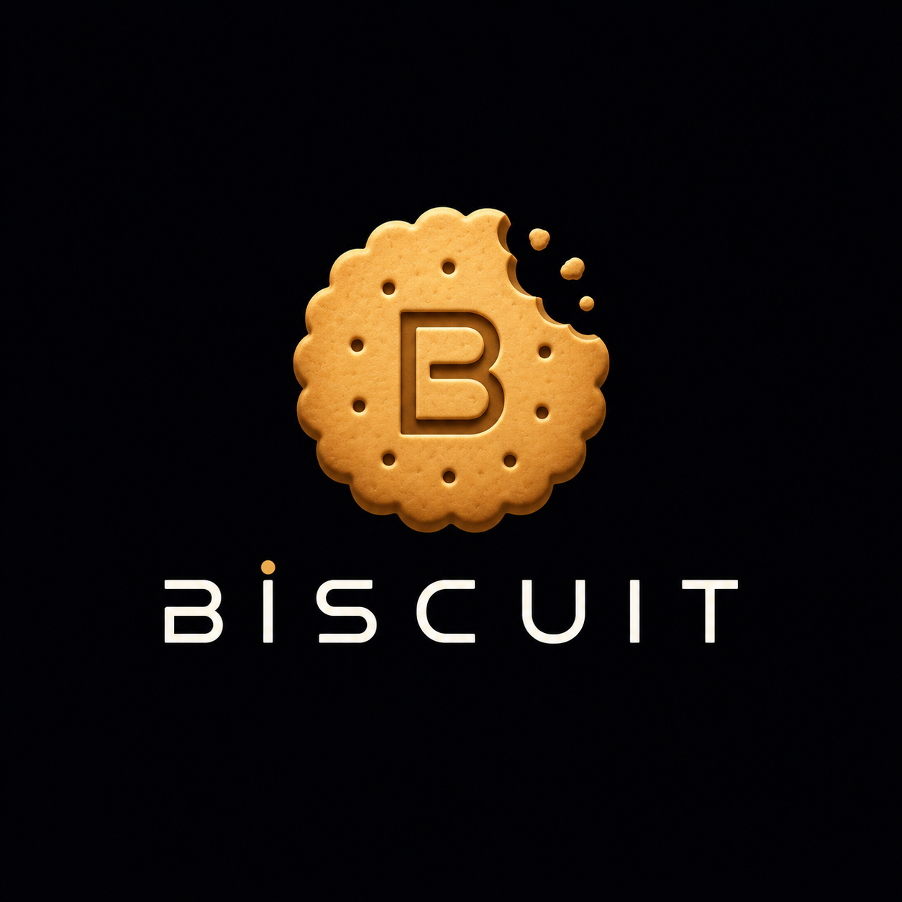

Built for Senior AI Engineer (Founding Team) @ Redrob AI
Problem Statement: Rank the top 100 candidates from a 100K pool for Redrob's Senior AI Engineer role under strict CPU/memory/time limits with reproducible scores and fact-based justifications.
Biscuit is a highly optimized, deterministic, CPU-only candidate ranking engine. It streams candidate records line-by-line using Python generators, eliminating high RAM peaks and scaling gracefully.
Traditional systems rely on raw keyword counting, which is easily gamed by candidates padding skills.
Candidate scores are normalized from 0.0 to 1.0 using six weighted dimensions:
Stream `candidates.jsonl` record by record. Parses details dynamically, scoring the full 100K pool within a ~2 GB peak footprint — comfortably under the 16 GB limit.
Validate candidate timestamps and durations. Discard impossible profiles (honeypots) and compute suspicion discounts for borderline cases.
Apply the scoring matrix across 6 dimensions, pass candidates through the technical skills gate, and compute the final weighted index.
Design Philosophy: We deliberately chose simple, transparent, deterministic Python rules over heavy neural models to guarantee sub-10 second, CPU-only execution with zero network requirements.
Core ranking uses zero external dependencies (no pandas/numpy) to avoid module conflicts, overhead, and guarantee sub-10 second execution.
Ensures 100% reproducible runtime matches the validator platform, avoiding OS-specific path and CRLF/LF line ending errors.
Utilized for direct sample test run, format check, and interactive output data visualization by the evaluation judges.
The official formatted CSV file containing exactly the top 100 candidate IDs, scores, ranks, and deterministic justifications.
Public code repository containing clean pipeline modules, Dockerfile, setup instructions, and validation scripts.
A Google Colab notebook linking to the repository, running candidate parsing on a sample file, verifying format and output.
Designed & Engineered by Team Biscuit